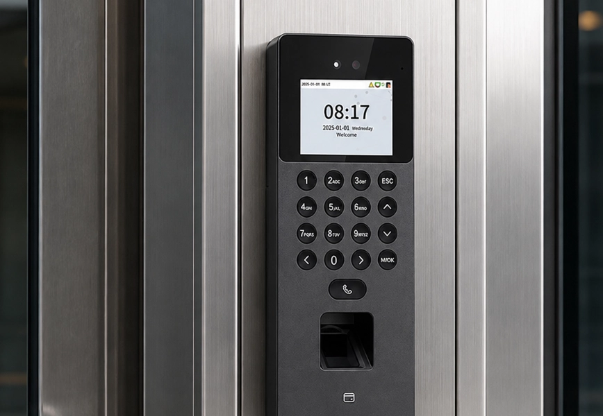
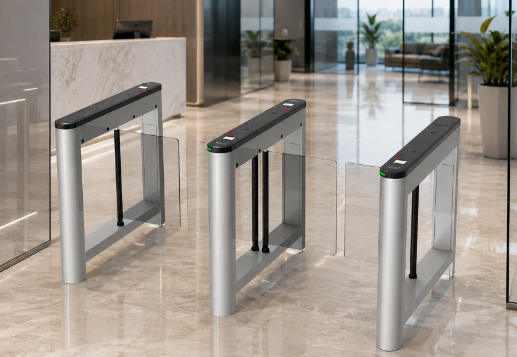
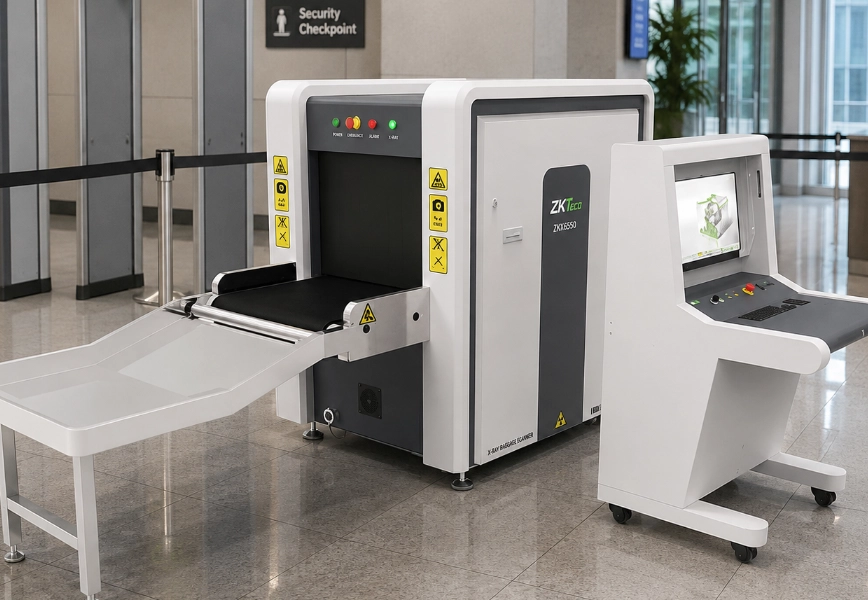
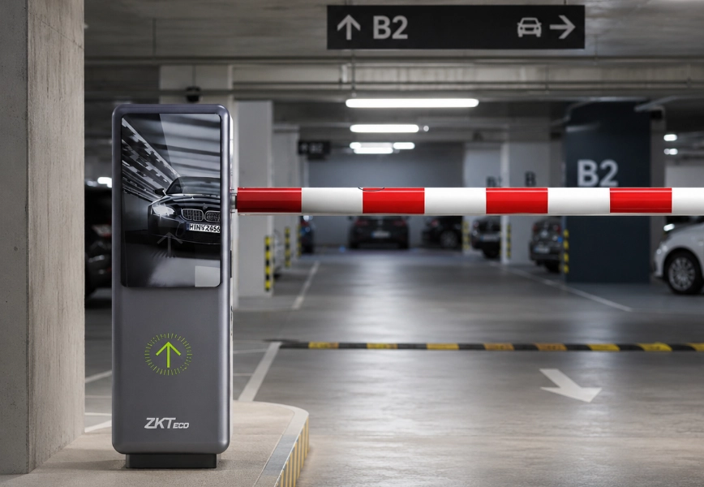
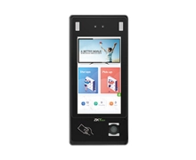
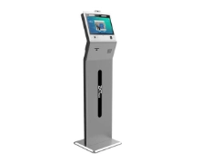
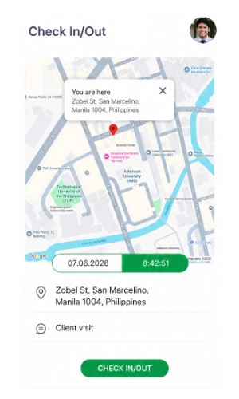

One Platform for Attendance, Access Control & Security
PeoplesHR Tracking brings together biometric attendance capture, physical access control, and real-time workforce visibility, connected directly to PeoplesHR Time and Pay for pay that's accurate every single cycle.
Authorized ZKTeco Partner: Genuine Hardware, Manufacturer-Backed Warranty
A Complete Device Ecosystem Built Around Your Workplace
From a single-door reader to a fleet of AI-enhanced terminals, PeoplesHR Tracking hardware scales to match the site. Pick the category that fits, mix and match across locations.

Time & Attendance and Access Control Systems
The Access Control Product line is comprised of IP-based standalone access control device, networked access control panel, readers, guard patrol and accessories with network-based one-stop access control and T&A software, backed by one-stop R&D and manufacturing services for business partners.

Smart Entrance Control Systems
Entrance control is the management of people. General management methods include access control system, parking management system and visitor management system using intelligent turnstiles. In different environments, different types of entrance control devices are required. For example, the tripod turnstiles and full height turnstiles are installed in public venues, and flap barrier turnstiles are often installed in private enterprises, with biometrics integrated into entrance control to provide more intelligent management solutions.

Security Inspection Systems
These security inspection products offer a dependable and flexible intelligence security solution. We build a comprehensive security system to protect your entrance security, including People Inspection, Freight Inspection and Vehicle Inspection.

Smart Parking Systems
There has been a growing number of vehicles with the rapid development of the global economy and living standards. To manage vehicles efficiently, the number of parking lots has dramatically increased. By adopting License Plate Recognition Products (LPR), Ultra-High Frequency (UHF) products, Parking Barrier products, and Parking Guidance products, the system offers convenient user experiences from the entrance to the parking space.
Interactive Whiteboard Systems
These interactive whiteboards are widely applied to education and conference scenarios, which integrated with screen sharing, annotation writing, video conferencing and document viewing functions. The 4K UHD screen displays delicate images and multiple colors. The smooth touch screen writing experience allows unlimited extension of ideas. The built-in camera makes video conference more convenient and efficient.


Bringing Real-Time Attendance Tracking to the Factory Floor
A leading Sri Lankan apparel manufacturer modernized attendance tracking across its entire factory network, replacing manual processes with accurate, real-time data and measurable gains in operational efficiency.
32,000+
Employees
21
Factories in 2 Countries
386
Devices


One Connected Attendance
and Security System.
A single site rarely needs a single device. Barrier gates, turnstiles, fixed and PTZ cameras, and facial payment kiosks can all be mixed across offices, R&D centers, canteens, and loading docks, with every device feeding the same PeoplesHR attendance and access record.
ABS Cabinet (including Lock)
A rugged ABS storage cabinet with an integrated lock for securing devices, cards, and accessories on site.

Locker Pad
LockerPad-G4 Pro lets staff unlock personal lockers with a biometric or card tap, no keys required.

Face KIOSK
A standalone facial recognition kiosk for fast, contactless check-in at high-traffic entry points.
Face KIOSK
A compact facial recognition kiosk for lobby and floor-level attendance and access verification.
Time & Attendance Terminal
Captures every clock-in and clock-out at the source, so attendance data feeding payroll is accurate from day one.
COP (3rd Party Integration)
Control Operator Panel that connects third-party building systems into the same verification network.

DOP (3rd Party DCS Integration)
Deviation Operator Panel that integrates third-party DCS systems for exception handling and monitoring.
Entrance Gate
A turnstile entrance gate paired with biometric verification to manage access at building entry points.
Integrated Facial Recognition
Facial recognition built directly into the entrance flow for one-step verified entry, no separate card tap needed.
All Your Devices, Connected to PeoplesHR
Fingerprint machines, face recognition kiosks, self-service terminals, mobile check-ins, and access gates all connect to PeoplesHR through a secure middleware that keeps attendance data up-to-date without manual exports or reconciliation between systems.
- Devices connect through a secure middleware, not a third-party software layer
- Attendance and access events stay up-to-date in PeoplesHR, not stuck in overnight batch imports
- One unified employee attendance record, no matter which device captured the event
- Assign, transfer, or revoke access from PeoplesHR, and every device reflects the change immediately


Attendance Data Connected to PeoplesHR Time and Pay
PeoplesHR Tracking connects directly with PeoplesHR Time and Pay, so every punch and access event flows straight through to attendance, shift management, overtimes and payroll calculation, with no exports, no re-keying, and no reconciliation headaches at month-end.
Automatic Hours & Overtime
Worked hours, late arrivals, early departures, and overtime are calculated automatically from device data.
Exception Handling
Missed punches, shift mismatches, and unusual access patterns are flagged for review before payroll runs.
Audit-Ready Records
Every attendance and access event is timestamped and stored, giving you a defensible record for audits and disputes.
Built for Every Kind of Workplace
Remote Clock-In & Clock-Out for Field Teams

Not every employee sits at a fixed device. For field, site, and mobile teams, PeoplesHR Time and Attendance connects with remote attendance devices and supports geo-based tracking, so staff can clock in and out from the PeoplesHR mobile app or a portable biometric terminal, with the system checking that they're within an approved work radius before the record is accepted.
- Approved locations and radius, set per site, branch, or project
- Clock-in from the mobile app or a handheld biometric device
- Clock-ins outside the radius are flagged, not silently missed

Why Organizations Trust PeoplesHR Tracking
Trusted, Trained Staff
Every technician is vetted and trained before they're deployed to your site, so the people handling your attendance and access systems are people you can trust.
ISO-Certified Team
Our installation and support team is ISO certified and legally bound to follow protocol, so every engagement meets a documented standard instead of ad hoc practice.
A Higher Standard of Professionalism
From the first site visit through ongoing support, our team holds a standard of professionalism that reflects on your organization, not just ours.
Built for Business Continuity
Reliable hardware backed by accountable, trained staff keeps your attendance and access systems running, so a vendor issue never becomes your downtime.


"Partnering with PeoplesHR was a pivotal step in our digital transformation. Moving from manual processes to a fully digital HR system empowered our people — managing attendance, leave, and employee data with greater efficiency while laying the foundation for payroll and performance systems to follow."

Built on Nearly 30 Years of Proven Reliability
PeoplesHR is backed by close to three decades of industry experience with a team that's supported attendance and security systems for organizations, offering genuine devices, dependable support, and a platform organizations rely on today.
-
AuthorizedZKTeco Partner
Genuine devices, backed by a full manufacturer warranty.
-
99.9%Attendance capture accuracy
Biometric capture accurate enough to eliminate missed punches.
-
Up-to-dateSync with Payroll & T&A
Every clock-in flows directly into payroll calculations.
-
Multi-siteDeployment across branches
One platform, covering every site you operate.
-
ISO-CertifiedInstallation & support team
Every engagement follows a documented, certified standard, not ad hoc practice.
An Authorized ZKTeco Partner
- Genuine hardware, guaranteed
- Full manufacturer-backed warranty on every device
- Certified installation and technical support
- Direct access to official firmware and security updates
We are ZKTeco's Enterprise Solution Partner in Sri Lanka, and every fingerprint machine, face recognition kiosk, and access control device we supply comes through that official partnership. Devices bought through unauthorized channels carry real risks. With PeoplesHR Tracking, every device is genuine, warrantied, and backed by ZKTeco directly.
Let's Design the Right Setup for Your Organization
Every site is different. Talk to our team about your specific requirements, and we'll recommend the right solution for you.
Talk to SalesFrequently Asked Questions
What types of devices does PeoplesHR Tracking support?
PeoplesHR Tracking works with fingerprint machines, face recognition kiosks, card readers, and PIN terminals, so you can choose the check-in method that fits each site, or mix methods across locations.
Is PeoplesHR Tracking an authorized ZKTeco partner?
Yes. PeoplesHR Tracking is a fully authorized ZKTeco partner, which means every fingerprint machine, face recognition kiosk, and access control device we supply is genuine, backed by manufacturer warranty, and eligible for official firmware and security updates. Buying through an unauthorized reseller can mean voided warranties, counterfeit hardware, and no direct support line back to the manufacturer. These are risks you avoid by working with an authorized partner.
How do devices actually connect to PeoplesHR?
Through ZKTeco's authorized WDMS middleware, which we deploy as part of every installation. It pulls attendance and access events off each device and pushes them straight into PeoplesHR, so there's no third-party software layer or manual export step sitting between your hardware and your data.
Does attendance data flow automatically into payroll?
Not directly. Attendance and access data flows into the Time and Attendance module of PeoplesHR, where hours, overtime, and exceptions are calculated automatically. That accurate record of shifts worked is what payroll runs on, so pay is based on real attendance data instead of manual entry.
Can PeoplesHR Tracking be deployed across multiple branches?
Yes. Devices at every site sync back to a single central platform, so you get one consolidated view of attendance and access across your entire organization.